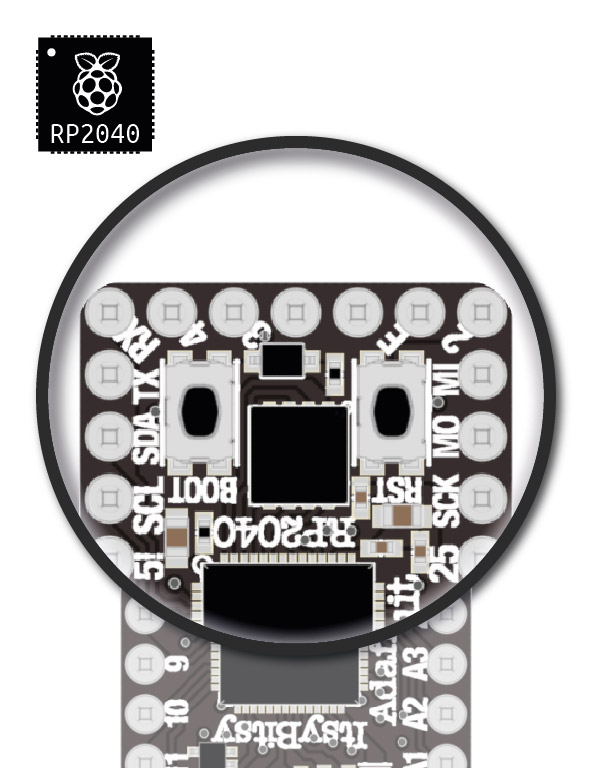
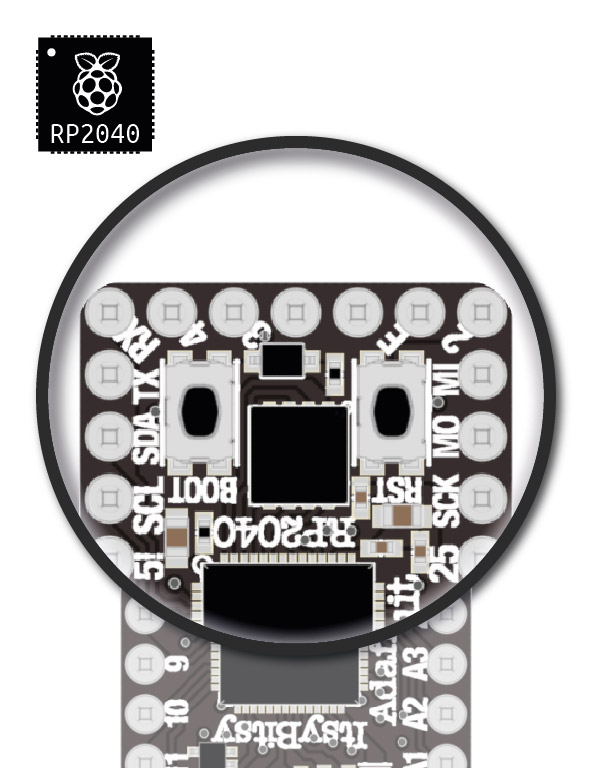

The central component at the heart of your projects. It runs code, reads and processes sensor data, and controls outputs (lights, motors, speakers, etc.)
Your kit includes one of two functionally equivalent ItsyBitsy Development Boards, depending on the edition of your Connected Interaction Kit. This page is designed to help you identify which version you own.
| 2022 & 2024 Edition | 2023 Edition |
|---|---|
| ItsyBitsy M4 Express | ItsyBitsy RP2040 |
|
|
| Learn More | Learn More |
 

The ItsyBitsy M4 Express features one (RESET) button. The ItsyBitsy RP2040 features two (BOOT, RESET) buttons.